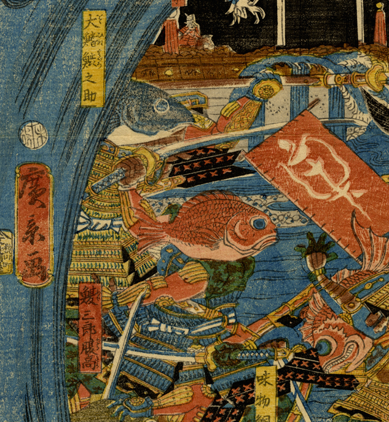

← 图鉴索引

甲冑を身につけた鮪と鯛。武器を手に戦う姿勢。
出典：親書誌：U426_nichibunken_0254：青物魚軍勢大合戰之圗；アオモノサカナグンゼイダイガッセンノズ／日付：2014／資源識別子：U426_nichibunken_0254_0002_0000
Copyright (c)2010- International Research Center for Japanese Studies, Kyoto, Japan. All rights reserved.